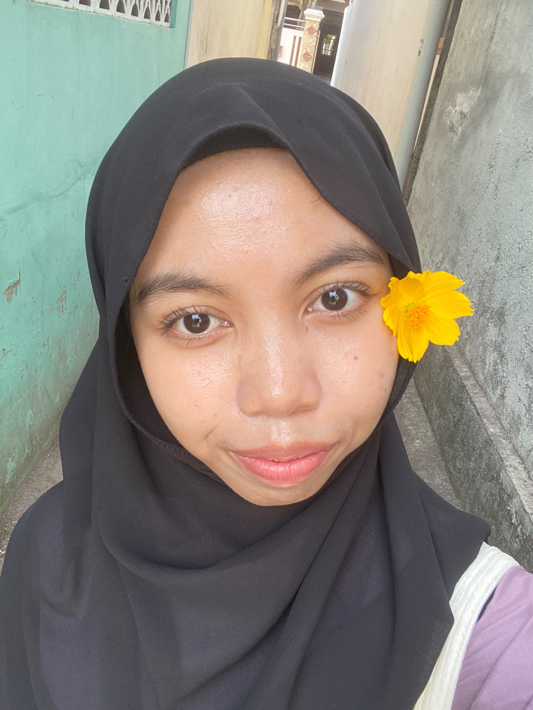

Mahasiswa Sistem Informasi
Profil | Pendidikan | Cita-cita & Pandangan Hidup | Kontak
Saya lahir pada 29 agustus 2009 di way kanan, provinsi Lampung. Saya merupakan anak pertama dari 2 bersaudara, saya memiliki adik perempuan yang bernama ARIKA FATINA PUTRI yang saat ini sudah berusia 8 tahun dan sedang duduk di bangku SD kelas 2, saat ini saya sedang menempuh pendidikan S1 Sistem Informasi di STMIK EL RAHMA YOGYAKARTA
| Tingkat | Institusi | Tahun |
|---|---|---|
| Sarjana (S1) Sistem Informasi | Universitas STMIK EL RAHMA YOGYAKARTA | 2026 - Sekarang |
| SMA/Sederajat | SMA Negeri 1 KASUI | 2023 - 2026 |
| SMP/MTS/Sederajat | MTS Negeri 1 WAY KANAN | 2020 - 2023 |
| SD/Sederajat | SD Negeri 01 KAMPUNG BARU | 2014 - 2020 |
Cita-cita: Menjadi seorang Data Analyst profesional yang mampu menyajikan solusi berbasis data guna membantu perusahaan mengambil keputusan strategis yang tepat dan efisien
Pandangan Hidup: "Teruslah belajar dari setiap kegagalan, karena konsistensi dan kerja keras adalah kunci utama menuju kesuksesan."
Anda dapat menghubungi saya melalui tautan di bawah ini:
fun fact tentang saya adalah: saya bisa tidur dimana pun, kalau kepala saya sudah tertaruh/tersandar pasti saya langsung tidur. Dan fun fact lagi, saya hobi membuat kue, tapi saya selalu kesusahan untuk menghabiskannya, bukan karna rasa tetapi karna saya tidak terlalu suka makan, dan fun fact saya akan dianggap orang yang sangat pendiam oleh orang yang baru mengenal saya, jika sudah berteman dekat dalam waktu yang lama saya akan dianggap sbegai orang yang banyak tingkah dan random, dan masih banyak lagi fun fact tentang saya